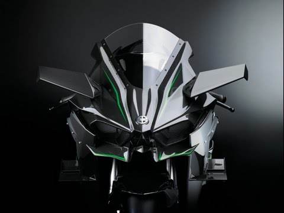
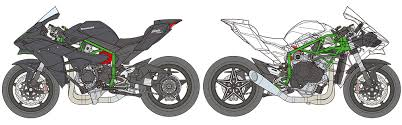

Kawasaki
Kawasaki is een van de grote vier Japanse motorfietsmerken. De motorendivisie is een onderdeel van Kawasaki Heavy Industries Ltd.
 Historie In 1949, toen de vliegtuigtak van Kawasaki Heavy Industries naar civiele opdrachten zocht, werd de eerste motorfiets uitgebracht, een 154 cc kopkleppertje. Naast motoren en vliegtuigen bouwt Kawasaki Heavy Industries ook schepen en treinen. Vanaf 1954 ging men 58 cc tweetaktblokjes leveren aan Meihatsu. In 1962 nam men het motormerk Meihatsu over en in 1964 volgde Meguro. Sindsdien verwierf Kawasaki bekendheid als een van de vier grote Japanse motormerken. De eerste motorfietsen waren Meguro- en Meihatsu-modellen, op hun beurt weer kopieën van Europese motorfietsen. De eerste zware Kawasaki, de 650 cc W1, was gebaseerd op de Meguro Stamina, een kopie van de BSA A7. Hierna kwam Kawasaki met snelle twee- en driecilinder tweetakten en in 1971 met de beroemde viertakt Z-1 900. Kawasaki is actief of actief geweest op alle terreinen van de motorsport, hoewel wereldkampioenschap wegrace successen schaars zijn. Sinds 1975 heeft Kawasaki ook een fabriek in Lincoln, Nebraska.
